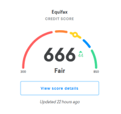

A Convenient & Secure Way to See Where Your Credit Stands - RBC Royal Bank
 Skip to main content Royal Bank Canada(EN) Sign In Royal Bank Canada(EN) SIGN IN MENU
Skip to main content Royal Bank Canada(EN) Sign In Royal Bank Canada(EN) SIGN IN MENU
Get free access to your credit score with RBC Online Banking
Learn how to check your score without impacting your credit rating.
A Convenient & Secure Way to See Where Your Credit Stands
As an RBC Online Banking 1 client you’ll get FREE access to the TransUnion CreditView Dashboard 2 , where you can view your current credit score and learn how different types of credit can impact it over time.
Why Use This Service? It's Completely FREE
Available to all RBC Online Banking clients at no additional charge. No Impact to Your Credit Rating It makes a non-credit related inquiry, or “soft” inquiry, so it will not affect your credit score. Easy to Understand Your financial standing is presented in a simple visual dashboard. How To Check Your Credit Score See What Impacts Your Rating
See What Impacts Your Rating
With the Credit Score Simulator Tool, you can try different credit scenarios to see how small changes can positively or negatively affect your credit score.
See how new credit could impact you. Explore different ways to improve your current rating. Use it as often as you like with no impact to your rating.What is a credit score? Your credit score is a good indicator of your financial health and reflects your ability to borrow money and repay it responsibly. It’s one of the key tools that banks, credit card companies or other institutions use to determine whether you qualify for credit.
Access Your Credit Score in 3 Easy Steps
Sign-in to RBC Online Banking 3
Click the “View Your Credit Score” link. (Located on the right side of your Accounts Summary page under My Services)
Agree to the terms and you will have access to your dashboard.
Get Your Credit Score in RBC Online Banking Today
It’s a simple, FREE way to find out where your credit currently stands and can help you make the right credit choices moving forward.
Sign-in to RBC Online Banking
Don't have access? Enrol Today
Have a Question? Ask or call TransUnion: 1- 855-889-4157
View Legal Disclaimers Hide Legal Disclaimers
® / ™ Trademark(s) of Royal Bank of Canada. RBC and Royal Bank are registered trademarks of Royal Bank of Canada. Personal lending products are offered by Royal Bank of Canada and are subject to its standard lending criteria. Legal Disclaimer 1. RBC Online Banking is operated by Royal Bank of Canada. Legal Disclaimer 2. The TransUnion CreditView Dashboard is only available to existing RBC Online Banking clients who are age of majority in their province of residence. In order for you to access the CreditView Dashboard, we must share your name, address and date of birth with TransUnion each time you click on the "View Your Credit Score" link in Online Banking. In certain instances, TransUnion may not be able to locate a record matching your information and you will not be able to access your credit score in the TransUnion CreditView Dashboard. Should this happen, please contact us to verify your information. The CreditView Dashboard information is provided by TransUnion for educational purposes and is not intended to provide you with financial advice. We do not review or use CreditView Dashboard information, and CreditView Dashboard information cannot be interpreted as credit approval. As such, Royal Bank of Canada is not liable for any decision you make based on CreditView Dashboard information.Royal Bank of Canada Website, © 1995-
Legal | Accessibility | Privacy & Security
Back to Top